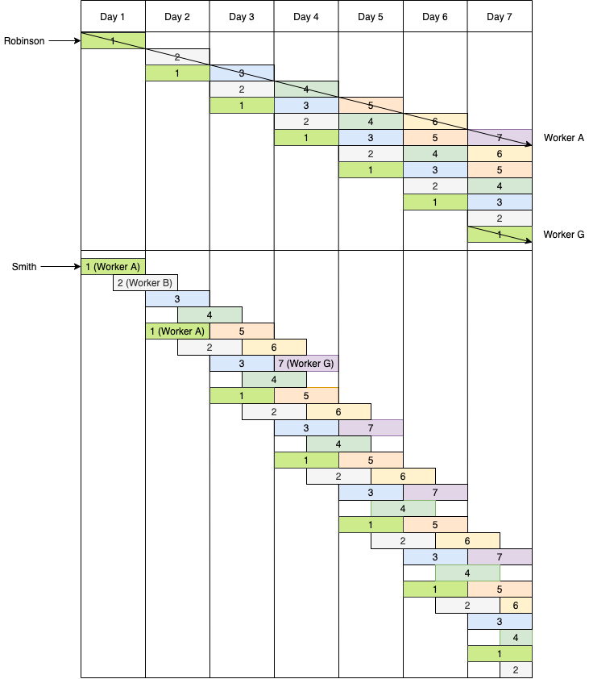

Created: 06 July 2020 / Finished: xx xxx 2020 / Modified: xx xxx 2020
Written by Scottish economist Adam Smith in 1776, An Inquiry into the Nature and Causes of the Wealth of Nations, often abbreviated simply to The Wealth of Nations, is considered the beginning of classical economic theory.
Smith spent 10 years writing Wealth of Nations and it shows. The book provides extreme detail and explanation of his arguments and delves into a variety of topics.
Wealth of Nations was well-received by many. Samuel Adams, Thomas Jefferson, James Madison, Alexander Hamilton, George Washington, and even Karl Marx,
Smith's thesis of the first chapter is relatively simple:
"Division of labour is the great cause of its increased powers"
To exhibit the division of labour, he uses the pin factory as an example. There are "about eighteen distinct operations" to making a pin, and the most efficient method is to have one individual per distinct operation (Smith concedes that sometimes one man may head multiple operations). This proves efficient for a two reasons:

This idea is similar to the modern-day assembly line. Instead of having to work on multiple processes and spend valuable time transporting the product to and from sites, the line does the transporting and workers only focus on one operation.
Joan Robinson refutes Smith's division of labour argument in her An Introduction to Modern Economics by stating that a single worker can easily divide the 18 operations over 18 days to produce the same output as 18 different workers over one day. (See this post by Dr. Cameron Murray for specific quotes.) This argument only makes sense over a long period of time. In the short-term, because a complete product only occurs after one full product cycle, Smith's original method of overlapping produces faster results. But as seen in the Robinson's method, product sets will be completed every day after Day 7, whereas with Smith the first complete set is finished on Day 4 and one will be completed every day thereafter.
What Robinson's model does not account for is skilled labor, where a large degree of expertise is required for a specific area. Take semiconductor fabrication (creating computer chip from their elemental materials, like Si and Cu). There are four main processes: deposition, etching, modification, and patterning. Within these are hundreds of subprocesses and nuances that take years to learn, requiring a career specialization. There are many cases of engineers being in one process group for 20-30 years and still learning things about the process. With fields like this it is not worth it for the employee or employer to generalize their skills.
Smith proposes three reasons as to why division of labour outputs so much more: